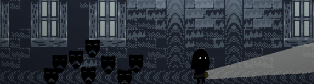
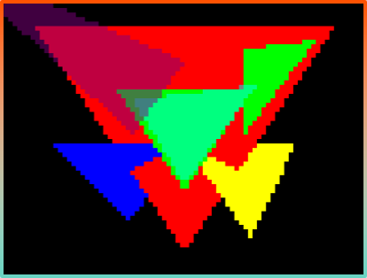
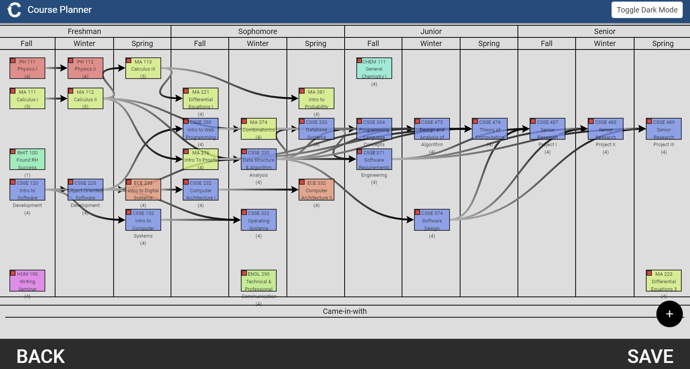
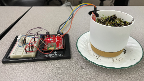
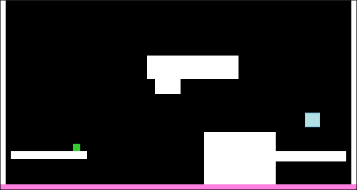

bryce@portfolio:~$ whoami
Bryce
Stelle.
CS senior @ Rose-Hulman Institute of Technology · May 2027
Three summers interning at Viavi Solutions. Terminal - programmer's best friend.
bryce@portfolio:~$ cd
~/about
About me
I've spent three summers interning at Viavi Solutions and still keep in touch with a lot of my coworkers. I love puzzles and problem-solving — building things like physics engines, a 3D polygon renderer, and a course planner for my entire degree. When something doesn't work the way I think it should, I take it apart and build my own.
On my own time I'm with the people I love, working on digital art, a Frieren-inspired game, and music — I play guitar, sing, rap, and write my own lyrics, including a self-duet I put together by looping my own guitar playing. I also read into etymology more than most people consider healthy, and once spent an afternoon learning special relativity just because infinity is a conceptually strange and beautiful thing.
I also tutor ESL students and help with Pre-Calculus and Calculus. There's something genuinely fulfilling about watching someone understand something for the first time.
bryce@portfolio:~/about$ cd ..~/projects
Projects

Proof-of-concept for two core systems of a BDO-inspired action RPG: directional modifier detection (up/down as held attack modifiers, multiplying the move set without adding more buttons) and a dynamic 4-key keybind menu with full player remappability. Designed to solve the "too many skills, not enough buttons" problem in a Frieren-aesthetic world.

Score-based retro platformer with seamless infinite looping. Platforms are procedurally
generated with mathematically guaranteed jumpability — kinematics solved to prove every
platform is reachable. Replaced the library's broken velocity model with a custom physics
engine I built from scratch after tearing the original apart. Enemy AI runs independently
per-instance after I tracked down a hidden Data attribute in the library
to solve a hivemind bug.

Wave-survival melee game with a transformation mechanic: become a damage-dealing red cloud. Enemies drop green clouds on death — damage dealt is proportional to the real-time geometric overlap area between the two clouds. The cloud visuals use ADD blend-mode compositing (borrowed from digital art) to merge many circles into one organic, masked shape revealing a red starry sky interior. Both an engineering and an art problem.

3D polygon renderer with occlusion culling, clipping, and transparency — sole developer. Input parsing and graphics processing run in parallel, mirroring the same pipeline techniques used in a GPU. Built for a parallel computing course.

Interactive 4-year degree map for Rose-Hulman students, built on top of existing major flowcharts. Supports custom courses for flexibility well past graduation. User data persisted via async calls to a database using promises.

IoT plant-monitoring device and platform. Arduino sensors track light and moisture; data syncs to a website, mobile app, and database to build a virtual garden with real-time health tracking and care recommendations. Assembled the hardware myself.

Built right after learning linear motion in AP Physics, within a year of finishing the class. Custom physics from scratch: acceleration, max speed, velocity, collision detection, wall jumping, and dashes. Procedurally generated platforms in raw HTML, CSS, and JS. The direct predecessor to Luminesce.

Height-balanced binary search tree with rotations, insertion, and deletion. All operations verified against big-O runtime bounds. Co-developed and fully tested.
~/skills
Skills & tools
// languages
// platforms & tools
// concepts
// hardware & other
~/experience
Experience
- Wrote embedded software for a fiber-optic testing device in a large-scale C++ codebase.
- Integrated GNSS features: position data storage, a live 3D-lock status indicator, and a settings configuration page.
- Fixed a network resource delay by modifying how Linux's NetworkManager renews IP addresses and DNS servers.
- Authored JenkinsFile and Bamboo YAML build configs; ran and debugged CI pipelines end to end.
- Presented feature implementations to marketing stakeholders to verify expected behavior.
- Tracked down and resolved bugs across a proprietary codebase with minimal documentation.
- Tutored international students in English as a Second Language.
- Also tutored Pre-Calculus and Calculus AB.
~/contact